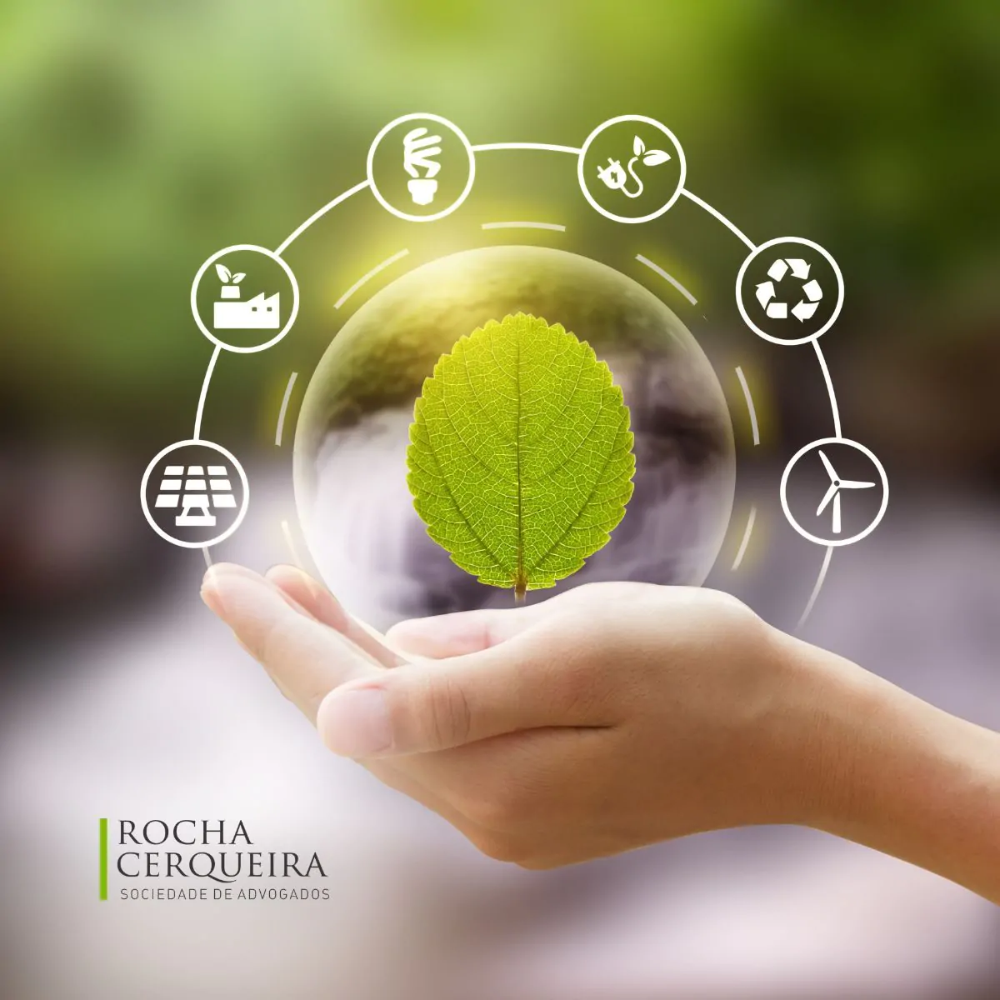

Dicas de Sustentabilidade no Dia a Dia
Dicas que podemos aplicar em casa
Economize água e energia, podemos começar com coisa simples como não se esquecer de fechar a torneira ao escovar os dentes, tomar banhos rápidos, para economizar a energia podemos não deixe aparelhos eletrônicos na tomada quando não estiverem em uso e não deixar luz acessa se não estiver utilizando o comodo.
Reduza o desperdício de alimentos, compre alimentos ecológicos, coma mais frutas verduras e cozinhe apenas oque for comer, se conzinhar além do que for comer congele o alimento para não estragar e ter que jogar fora.
Dicas que podemos colocar em pratica durante as compras
Leve sua ecobag, evite sacolas plásticas, trazendo sua própria bolsa reutilizável para o supermercado. Compre a granel prefira produtos a granel para reduzir o consumo de embalagens plásticas. Diga não aos descartáveis: Substitua canudos plásticos por opções de inox ou bambu e guardanapos de papel por versões de tecido.

Dicas que podemos fazer na hora do lazer
Use transporte sustentável: Deixe o carro em casa e opte por transporte público, bicicleta, patins ou uma caminhada. Quando sairmos para clubes, praias e cachoeiras revite deixar lixos nesses lugarem e leve uma bolsa para guardar os lixos e não poluir o ambiente, fazendo isso vai ajudar nas preservação do meio amebiente e na sua sustentabilidade
Reutilizar e Recicle:
Após a utilização antes de jogar fora pense se você pode dar um novo uso para o item utilizado.Transforme as suas peças de roupas em novas peças, potes transforme em recipientes, restos de comidas que não for comer use como adubo. Separe os lixos recicláveis para contribuir a criar produtos novos, conheça os pontos de coleta que incentivem a reciclagem. Ainda dá tempo para criar um mundo sustentável, os efeitos visiveis da poluição ainda são reversíveis. Se cada um fizer a sua, parte para manter o mundo sustentável.